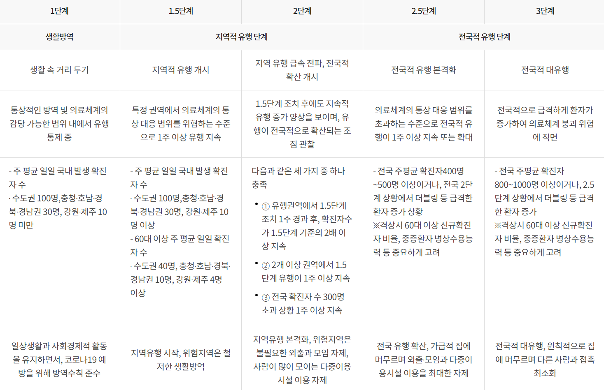
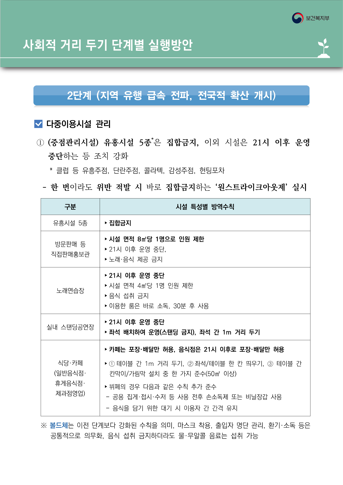
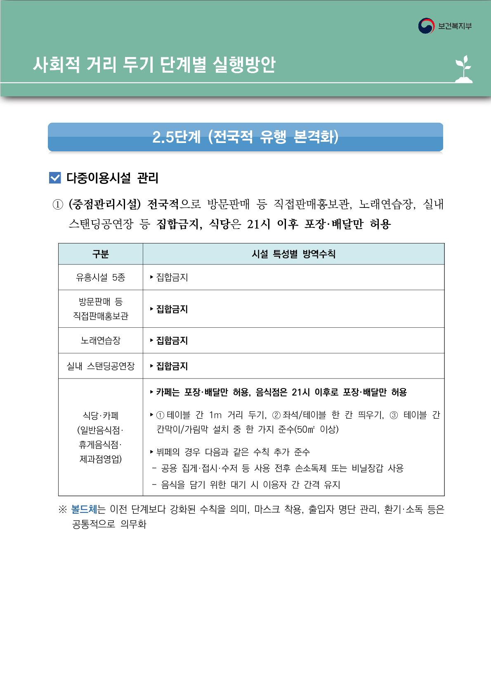

사회적 거리두기 정책
전체 사회적 거리두기 정책
클릭 시 이미지가 확대됩니다

단계별 다중이용시설 관리 정책
클릭 시 박스가 펼쳐칩니다
1단계
생활 속 거리 두기
생활 속 거리 두기
1단계 - 생활 속 거리 두기

1.5단계
지역적 유행 개시
지역적 유행 개시
1.5단계 - 지역적 유행 개시

2단계
지역 유행 급속 전파, 전국적 확산 개시
지역 유행 급속 전파, 전국적 확산 개시
2단계 - 지역 유행 급속 전파, 전국적 확산 개시

2.5단계
전국적 유행 본격화
전국적 유행 본격화
2.5단계 - 전국적 유행 본격화

3단계
전국적 대유행
전국적 대유행
3단계 - 전국적 대유행

지역별 거리두기 단계
16개 지역의 거리두기 단계
16개 지역의 거리두기 단계
지역별 거리두기 단계